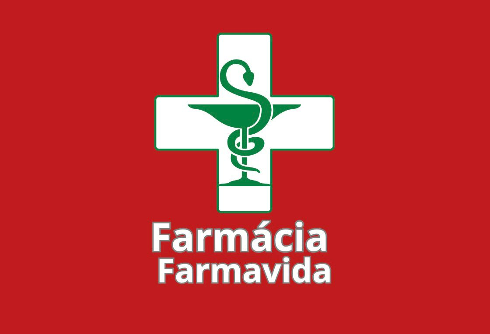

Tudo que você precisa em medicamentos e perfumaria.
Derivada de aminoácidos, a Creatina está relacionada com a energia muscular. Creatina Hardcore Integralmedica contribui para o desempenho físico de atletas que praticam exercícios físicos repetitivos de alta intensidade e curta duração..
R$ 137,99
Whey 100% PURE é composto exclusivamente pela proteína de soro do leite concentrada, é um suplemento ideal e essencial para quem busca ganho de massa magra e recuperação muscular porque possui alta concentração de proteína, aminoácidos essenciais e BCA..
R$ 139,99
Derivada de aminoácidos, a Creatina está relacionada com a energia muscular. Creatina Hardcore Integralmedica contribui para o desempenho físico de atletas que praticam exercícios físicos repetitivos de alta intensidade e curta duração..
R$ 137,99
Telefone: (44) 3249-1398
WhatsApp: (44) 99847-7095
Endereço: Avenida Presidente Vargas 1113, Lobato, Paraná, Brasil